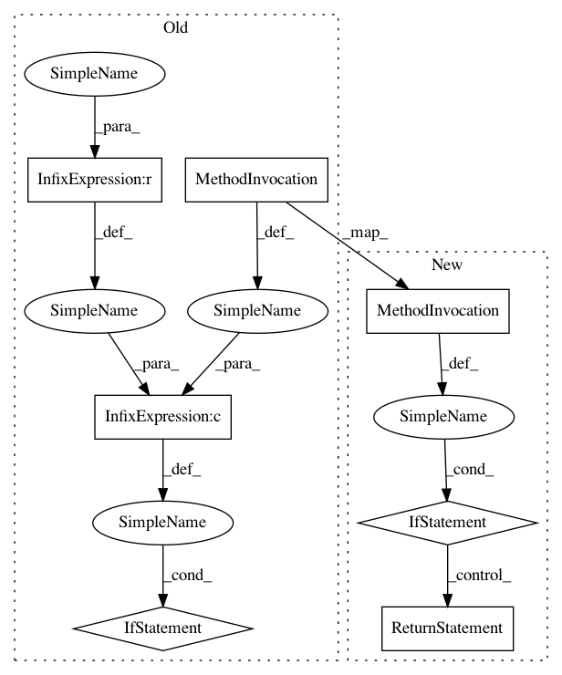

a34e171a4ae9071af30733b2ebca61199977f2c8,enthought/chaco/tools/range_selection_overlay.py,RangeSelectionOverlay,_mapper_default,#RangeSelectionOverlay#,173
Before Change
// use the container"s mapper instead.
mapper = getattr(self.plot, self.axis + "_mapper")
if isinstance(mapper, GridMapper) \
and self.plot.container is not None:
return getattr(self.plot.container, self.axis + "_mapper")
//------------------------------------------------------------------------
// Property getter/setters
//------------------------------------------------------------------------
@cached_property
def _get_plot(self):
return self.component
After Change
mapper = getattr(self.plot, self.axis + "_mapper")
if isinstance(mapper, GridMapper):
if self.axis == "index":
return mapper._xmapper
else:
return mapper._ymapper
else:
return mapper
//------------------------------------------------------------------------
// Property getter/setters
//------------------------------------------------------------------------
@cached_property
def _get_plot(self):
return self.component
In pattern: SUPERPATTERN
Frequency: 1
Non-data size: 7
Instances
Project Name: enthought/chaco
Commit Name: a34e171a4ae9071af30733b2ebca61199977f2c8
Time: 2009-11-10
Author: bhendrix@651a555e-23ca-0310-84fe-ca9f7c59d2ea
File Name: enthought/chaco/tools/range_selection_overlay.py
Class Name: RangeSelectionOverlay
Method Name: _mapper_default